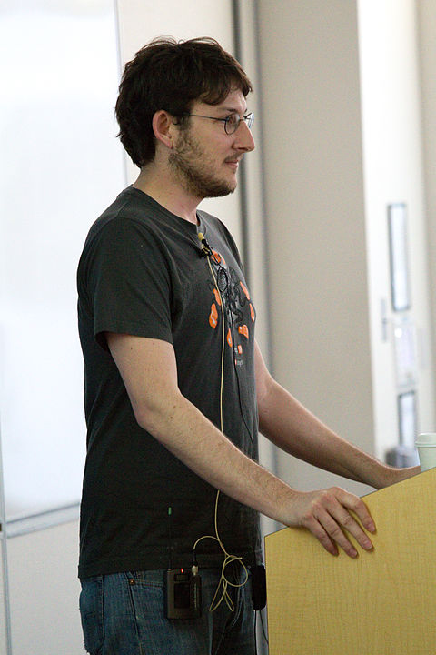

Vida pessoal
Dahl cresceu em San Diego , Califórnia . Sua mãe lhe deu um Apple IIc quando ele tinha seis anos, uma de suas primeiras experiências com tecnologia. Ryan frequentou uma faculdade comunitária em San Diego e mais tarde foi transferido para a UC San Diego, onde estudou matemática .
Carreira
Depois de trabalhar no projeto Node desde 2009, Dahl anunciou em janeiro de 2012 que se afastaria do projeto e passaria as rédeas para o criador do NPM e ex- funcionário da Joyent Isaac Z. Schlueter.
Ryan Dahl deu o seguinte motivo para deixar o projeto:
Depois de três anos trabalhando no Node, isso me libera para trabalhar em projetos de pesquisa. Ainda sou um funcionário da Joyent e aconselharei dos bastidores, mas não estarei envolvido nas correções de bugs do dia-a-dia.
Em 2018, ele anunciou o Deno , um tempo de execução JavaScript / TypeScript construído com V8 .